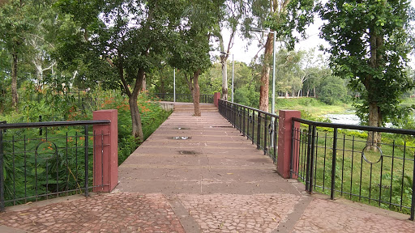
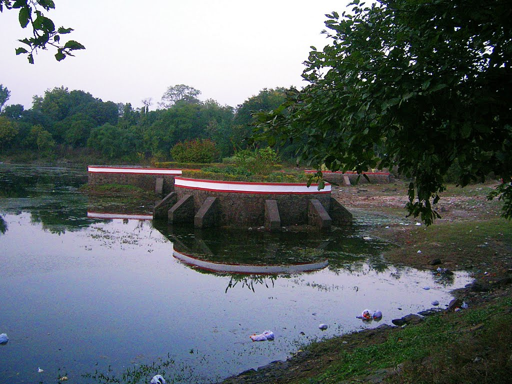

Dumna National Park
The Dumna Nature Reserve (DNR) of Jabalpur Municipal Corporation is spread over nearly 1800 acres of forested land on a plateau, about 40 meters above Jabalpur town. It was transferred to the Municipal Committee of Jubbulpore by the provincial government to act as the catchment area for the Khandari lake. The construction of Khandari Dam materialized in February 1883 under J.H. Morris, Chief Commissioner of the Central Provinces and Berar. Since then, the forested area provides rainwater to feed the Khandari Reservoir.

Sangram Sagar Lake
Sangram Sagar Lake happens to be a highly popular tourist spot of Jabalpur. Situated at a distance of about 15km from the city of Jabalpur, this lake was constructed by the Gond ruler Sangram Shah in the 15th Century. Many buildings of the medieval period (Middle Ages) can be seen here

Bhawartal Garden
Bhawartal Garden, situated in the heart of the city centre of Jabalpur is a very popular destination for children and age-old adults as well. The garden is ornamented with a number of slides, toy trains, and swings. The garden hosts early morning yoga and fitness sessions. It is also one of the most loved places to visit in Jabalpur for arranging get-togethers and picnics.
Devtal Garden
A picturesque pond the Devtal Garden and Pond serve as a vent of air amidst warmth belts of city existentialism. Literally translated to God's Pond, the Devtal is as ageless as God and hence is widely believed to be one of the oldest Tal inside the city. The pond incorporates a historic significance with it. It is stated to were built for the duration of the Gond dynasty and temples built across the pond create a juxtaposition of cultural and non secular hubs in the metropolis.

Jalpari
Jabalpur is a beautiful city of central India, surrounded by natural landscapes, hills, rivers and water bodies. The name is derived from Arabic word, “JABAL” which mean boulders. It is located in the Narmada Valley and is well connected by road, (NH-7). Also it is a major railway station in central India for railways.